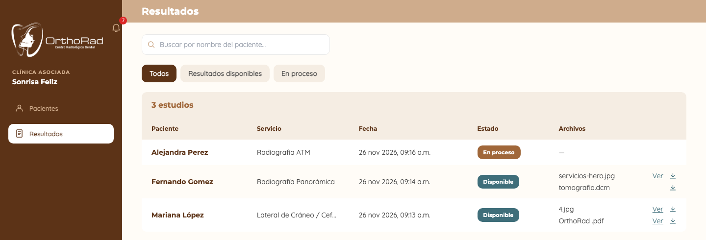

Para clínicas dentales
Los resultados de tus pacientes, a un clic.
Con el Portal de Clínicas Asociadas de OrthoRad recibes, ves y descargas los estudios de los pacientes que nos refieres. Sin CDs, sin memorias USB y sin esperas.

Aviso inmediatoTe avisamos por correo y en el portal cuando los resultados están listos.
Descarga directaImágenes, PDF y tomografías CBCT en calidad completa.
A cualquier horaConsulta los estudios cuando los necesites, desde tu computadora.
Todo en un lugarEl historial de cada paciente que nos refieres, ordenado y fácil de buscar.

Pide tu acceso por WhatsApp
Escanea el código con la cámara de tu celular y envíanos el mensaje. Nosotros creamos tu cuenta.
+502 3162 8739